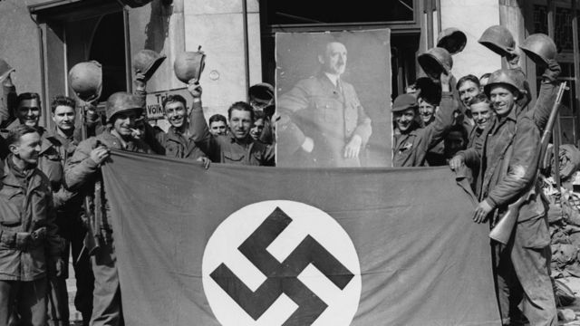
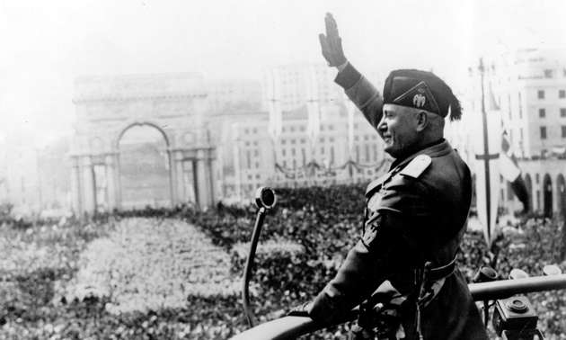

|  | A ascensão do Fascismo e do Nazismo aconteceu no período entreguerras, ou seja, um tempo de crises e de descrédito na Europa, entre 1919 e 1939. A Primeira Guerra Mundial acabou com as crenças em prosperidade no mundo ocidental, especialmente no continente europeu.
O século XIX foi marcado pela euforia com o progresso, as descobertas científicas, o avanço da Revolução Industrial e a hegemonia europeia no mundo por meio do colonialismo e do imperialismo. No final no século XIX, com a Conferência de Berlim, as potências europeias partilharam entre si o continente africano com a intenção de explorar suas matérias primas para a indústria em expansão. Além disso, lutaram pelo fim do tráfico atlântico na evidente intenção de fomentar novos mercados consumidores e vivenciaram assim um período de enriquecimento e expansão econômica, e o otimismo fazia parte da realidade das nações europeias.
Durante o período posterior à Primeira Guerra Mundial o poder econômico europeu foi diminuindo, enquanto novas potências cresciam. Os Estados Unidos da América mantiveram sua economia forte, e na Ásia o Japão se industrializou e se tornou imperialista. Portanto, o centro do mundo – como acreditavam os europeus – não era mais o Velho Continente.
As crises – sociais, políticas e econômicas – estavam presentes em uma Europa já em descrédito, que aos poucos via o número de conflitos sociais crescerem. Desta forma, vários foram os movimentos de esquerda que surgiram neste cenário, onde os sindicatos exerceram importante papel.
Desta forma a euforia e o otimismo tão presentes no século XIX abriram espaço para o pessimismo e para o descrédito espalhados por toda a Europa. Isso começou a fazer parte das propostas e ideias para a saída da crise e um nacionalismo agressivo surgido como solução foi uma dessas propostas que acabou ganhando força, especialmente na Alemanha e na Itália. Violência e ditadura passaram a significar solução. A justificativa do uso da força e da instauração de governos ditatoriais foi usada diversas vezes na história como argumento para conter momentos de crise e desordem.
A Alemanha, derrotada na Primeira Guerra Mundial, viu nas ideias nazistas de Adolf Hitler uma solução para sua recuperação. Já a Itália, mesmo vitoriosa na Primeira Guerra, viu em Benito Mussolini o líder que através do fascismo salvaria a Itália da crise.
Hitler e Mussolini conseguiram formar grupos de extrema direita compostos por ex-militares, estudantes e profissionais liberais, para quem as ideias nacionalistas e racistas fizeram sentido, pois atribuíam ao outro a culpa pela crise.
Os líderes alemão e italiano acabavam com comícios e qualquer tipo de manifestação socialista através de organizações paramilitares que combatiam – com o aval do Estado – o que chamavam de perigo vermelho.
Pode-se perceber que a construção do medo do comunismo, do socialismo e de ideias de esquerda estiveram presentes em vários processos históricos ao redor do mundo. A falta de informação leva, inclusive, pessoas a acreditarem até hoje que o Partido Nazista, por carregar o nome de Partido Nacional Socialista dos Trabalhadores Alemães, estava ligado às ideias socialistas. É sabido que o socialismo e o comunismo foram grandes inimigos dos regimes totalitários e a utilização dos termos socialista e trabalhadores foi uma estratégia para conquistar os trabalhadores afastando-os do que consideravam perigoso: as ideias de esquerda que se alastravam no mundo.
Com as crises aumentando e o Estado não conseguindo resolvê-las, o Fascismo e o Nazismo avançavam, conquistando um número cada vez maior de adeptos. |
|  | Com o fim da Primeira Guerra Mundial (1914–1918), a Itália foi ignorada nos tratados que selaram o conflito. O desgaste social e econômico mal recompensado mobilizou diferentes grupos políticos engajados na resolução dos problemas da nação italiana. No ano de 1920, uma greve geral de mais de dois milhões de trabalhadores demonstrava a situação caótica vivida no país. No campo, os grupos camponeses sulistas exigiam a realização de uma reforma agrária.A mobilização dos grupos trabalhadores trouxe à tona o temor dos setores médios, da burguesia industrial e dos conservadores em geral. A possibilidade revolucionária em solo italiano refletiu-se na ascensão dos partidos socialista e comunista. De um lado, os socialistas eram favoráveis a um processo reformador que traria a mudança por vias estritamente partidárias. Do outro, os integrantes das facções comunistas entendiam que reformas profundas deviam ser estimuladas.
O processo de divisão ideológica das esquerdas acontecia enquanto os setores conservadores e da alta burguesia pleitearam apoio ao Partido Nacional Fascista. Os fascistas, liderados por Benito Mussolini, louvavam uma ação de combate contra os focos de articulação comunista e socialista. Desse modo, o “fasci di combattimento” (fascismo de combatimento) passou a atacar jornais, sindicatos e comícios da esquerda italiana.
Criando uma força miliciana conhecida como “camisas negras”, os fascistas ganharam bastante popularidade em meio às contendas da economia nacional. A demonstração de poder do movimento deu-se quando, em 27 de outubro de 1922, os fascistas realizaram a Marcha sobre Roma. A manifestação, que tomou as ruas da capital italiana, exigia que o rei Vitor Emanuel III passasse o poder para as mãos do Partido Nacional Fascista. Pressionado, a autoridade real chamou Benito Mussolini para compor o governo.
Inseridos nas esferas de poder político central, os fascistas teriam a oportunidade de impor seu projeto político autoritário e centralizador. Já nas eleições de 1924, os representantes políticos fascistas ganharam a maioria no parlamento. Os socialistas, inconformados com as fraudes do processo eleitoral, denunciaram a estratégia antidemocrática fascista. Em resposta, o socialista Giacomo Matteotti foi brutalmente assassinado por partidários fascistas.
Mussolini já tomava ações no sentido de minar as instituições representativas. O poder legislativo foi completamente enfraquecido e o novo governo publicou a Carta de Lavoro, que declarava as intenções da nova facção instalada no poder. Explicitando os princípios fascistas, o documento defendia um Estado corporativo onde a liderança soberana de Mussolini resolveria os problemas da Itália. No ano de 1926, um atentado sofrido por Mussolini foi a brecha utilizada para a fortificação do Estado fascista.
Repressão e corrida imperialista
Os órgãos de imprensa foram fechados, os partidos políticos (exceto o fascista) foram colocados na ilegalidade, os camisas negras incorporaram-se às forças de repressão oficial e a pena de morte foi legalizada. O Estado fascista, contando com tantos poderes, aniquilou grande parte das vias de oposição política. Entre os anos de 1927 e 1934, milhares de civis foram mortos, presos ou deportados.
O apelo aos jovens e à família instigou grande apoio popular ao regime do Duce (forma como os italianos referiam-se a Mussolini). Em 1929, os acordos firmados com a Igreja no Tratado de Latrão aproximaram a população católica italiana ao regime totalitário. Ao mesmo tempo, o crescimento demográfico e o incentivo às obras públicas começaram a reverter os sinais da profunda crise que tomava conta da Itália. O setor agrícola e industrial passou a ganhar considerável incremento, interrompendo o processo inflacionário da economia.
Com a crise de 1929, a prosperidade econômica vivida nos primeiros anos do regime sofreu uma séria ameaça. Tentando contornar a recessão econômica, o governo de Benito Mussolini passou a entrar na corrida imperialista. No ano de 1935, os exércitos italianos realizaram a ocupação da Etiópia. A pressão das demais potências capitalistas resultaria nas tensões que desaguaram na deflagração da Segunda Guerra Mundial (1939–1945), momento em que Mussolini aproxima-se do regime nazista alemão. |